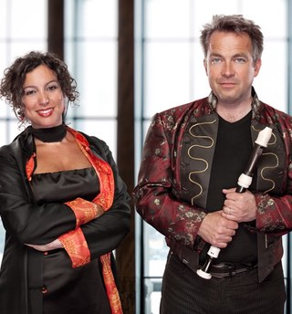
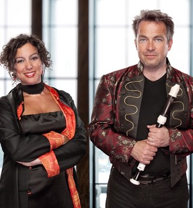

Sommarkurs 10-13 augusti 2017
I sommar blir det en andra sommarkurs med blockflöjten i centrum på vackra Glimåkra folkhögskola i Skåne!
Ensemblespel i olika form, masterclasses, workshops, teknikpass, konserter, bad och lägeraktiviteter. En ensemblekurs för alla från 12-100 år med viss notläsningsvana. Solokursen innehåller masterclass-lektioner för Dan Laurin, ensemblespel m.m. Den har ett begränsat antal platser och riktar sig i första hand till dig som studerar eller siktar på att studera vid Musikhögskola. Kursens grundnivå motsvaras av en hel sonat av Telemann eller Händel, Brüggens etyder eller liknande.
Du får undervisning och inspiration av erfarna blockflöjtister och pedagoger. Lärare 2017 är Pia Loman, Sofia Nelson, Emelie Roos samt gästlärarna Anders Renberg, Dan Laurin och Anna Paradiso.


 


Plats: Glimåkra Folkhögskola
Kursavgift inkl. mat och logi i dubbelrum: Ensemblekurs: anmälningsavgift 500 kr + 1650 kr. Solokurs anmälningsavgift 500 kr + 2000 kr. För enkelrum tillkommer en avgift på totalt 300 kr. Sista anmälningsdag: 1 maj. Då ska anmälningsavgiften vara betald. Mer info och anmälningsformulär: www.glimakrablockflojtsdagar.se Kontakt: glimakrablockflojtsdagar@gmail.com Betalning görs till föreningen Flautissimo på bg: 5826-8871. Ange GB17 samt elevens namn! För övriga frågor om inackorderingen kontakta Glimåkra folkhögskola 044 - 44 800
Anmälan öppnar senast 15 februari.
Välkommen i sommar! Pia, Annie, Sofia och Emelie.
Kontakt: glimakrablockflojtsdagar@gmail.com
Glimåkra Blockflöjtsdagar 2016 genomfördes med stöd av: